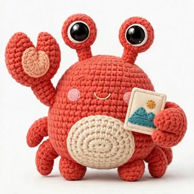

The URL is the API,
with claws.
crabcrop fetches your original, applies the operations in the URL in order, and serves the result. Write the resize, crop, format, and filters into a signed URL, and skip the pre-generated thumbnails and the build step entirely.
Signed with HMAC-SHA256. Cached by canonical key. Served with Cache-Control: immutable for a year.

format(avif)Cold p50, resize to 800 wide, JPEG
Warm p50, served from the in-memory result cache
Warm throughput, resize, 8 workers
Measured locally, October 23, 2026. Method and full numbers in the Speed section below.
One URL. Every instruction inside it.
Every request is GET /<signature>/<operations>/<source-url>. Click a segment. Learn what it does, what it hides, and where it bites.
The signature is shortened for display. A real one is 64 hex characters, like the worked example in the panel.
signatureSignature
Grammar
Example
Watch out:
The playground. Snap a URL together.
Flip the controls. Watch a real crabcrop URL assemble, segment by segment, in the exact grammar the server parses. Runs entirely in your browser. Nothing you type leaves the page.
Local development only: the server must run with unsafe allowed, and purges still always need a real signature.
The first segment above is a placeholder that marks where the signature goes. In production it is the hex HMAC-SHA256 of everything after it, computed with your secret by a client library or the CLI. Produce a real one in the Sign it section.
What you just built
What the server will do
Before, after, and a little sideways.
Drag the crop window by its claws. Stack filters in any order and watch the order change the picture. Crop coordinates are source pixels, and filter order is meaning.
CSS preview. Your browser approximates the look with CSS filters. A running crabcrop server applies the real operations to the actual pixels, in this order. Blur strength and brighten do not map one to one.
left 300, top 150, right 900, bottom 550, size 600x400
Drag inside the window to move it, drag a claw to resize. Keyboard: arrows move by 1 px, Shift by 10 px, Alt plus arrows resize from the bottom right, Home resets.
Your chain so far:
Sign it in your stack.
One signing scheme, specified once, with a canonical set of test vectors that every implementation runs as its test suite. The server verifies with the same Rust crate your app can build with, so client and server cannot drift.
Compute HMAC-SHA256 over the remainder of the path, the operations and the source URL exactly as they appear with no leading slash, keyed with your secret. Hex encode the result. Use it as the first path segment.
# Sign the remainder. The claw signs what it serves. # The hex output is segment one of the URL. printf '%s' '300x200/https://example.com/photo.jpg' \ | openssl dgst -sha256 -hmac 'your-secret' # SHA2-256(stdin)= 3c1f6c180116661877bd4c85fd201a178087d74c1cc188cc584e819d901308c6
// Sign once, reuse the URL everywhere. // Same vectors, same signature, no drift. import { buildURL, buildSrcSet, purgeSignature } from "@crabcrop/url"; const url = buildURL({ base: "https://img.example.com", secret: "your-secret", operations: "crop:1200x630:smart/filters:format(webp):quality(80)", source: "https://example.com/photo.jpg", }); const srcset = buildSrcSet({ /* same options */ }, [400, 800, 1200]);
# Standard library only. Nothing extra to haul in. # Builds the signed URL and the srcset in one go. from crabcrop_url import build_url, build_srcset, purge_signature url = build_url( base="https://images.example.com", secret="your-secret", operations="300x200/filters:grayscale", source="https://example.com/photo.jpg", ) srcset = build_srcset(..., widths=[400, 800, 1200])
// The same crate the server verifies with. // If it signs here, it verifies there. use crabcrop_url::{build_url, sign}; let signature = sign(secret, "300x200/https://example.com/photo.jpg"); let url = build_url(base, secret, "crop:1200x630:smart/filters:format(avif):quality(auto)", "https://example.com/photo.jpg")?;
Check the scheme yourself, right now.
Secret Jefe, message what do ye want for nothing?, HMAC-SHA256 ba5396e10039ec002bf1fde117eee48df8c2f06bc47b5f2d3272ea77f6862da9.
Secret your-secret, remainder 300x200/https://example.com/photo.jpg, HMAC-SHA256 3c1f6c180116661877bd4c85fd201a178087d74c1cc188cc584e819d901308c6.
Small URL. Long reach.
The transform is only the first tide. Caching, metadata, negotiation, and purging are built into the same URL.
39 filters and encoding directives, chained inside one filters: segment in the order you write them.
Canonical keys, two-tier cache
Signed URLs are content addressed, and entries key on the canonical form of the parsed operations, so equivalent spellings share one entry. A byte-bounded in-memory LRU sits in front, with an optional disk tier underneath that survives restarts and promotes hits back into memory. Only 200 responses are cached. Errors never are.
Cache-Control: immutablePresets that stay put
A preset names an operation string on the server, so templates stay short and the transform menu stays under operator control. Treat a preset as a stable template and never edit one in place: roll a change out under a new name, because signed responses travel with a one-year immutable cache header that no purge can reach downstream.
preset:og-cardPurge one, or purge the group
/purge invalidates every stored variant of one result in both cache tiers, and /purge-group clears a whole preset output set named in the Cache-Group header. Purge signatures are HMACs under a subkey derived from your secret, a separate domain from image signatures, so an image signature can never be replayed as a purge.
Meta JSON and placeholders
Send Accept: application/json on any image URL and get dimensions, format, byte size, and source size instead of image bytes. Ask for placeholders and the same response adds the dominant color, a five-color palette, a tiny blurred JPEG preview, and a ThumbHash string your client decodes into an aspect-correct blur while the real image loads.
quality(auto), verified
quality(auto) picks a quality per image, from 50 for flat images to 95 for detailed ones. For JPEG and JPEG XL, crabcrop then encodes, decodes, and scores the result against the processed source with SSIMULACRA2, adjusting quality until it lands on target, and reports the achieved score back in meta.
Format negotiation that listens
Name no format and the Accept header decides: among AVIF, JPEG XL, and WebP, the highest q-value wins, ties break by server preference in that order, and a format refused with q=0 is never picked. An explicit format(...) in the URL always wins, and wildcards do not count as an offer.
Client hints, DPR, and Save-Data
A URL that sizes nothing can take its width from client hints, quantized so nearby viewports share one cache entry, with dpr scaling the same template for retina displays. A request carrying Save-Data: on gets the default quality stepped down one notch, from 80 to 70, and stepped responses are cached separately.
Sources, where they already live
Fetch originals over HTTP and HTTPS under a source policy, from S3 or S3-compatible stores, from Google Cloud Storage, or from a local file root that refuses path escapes. Every fetch is bounded at 10 seconds and 10 MiB, and EXIF orientation is applied at decode, so phone photos come out upright.
s3://bucket/key · gs://bucket/key · file:///pathGraceful by design
An optional fallback image serves through the same operations when a source cannot be fetched or decoded, marked with X-Crabcrop-Fallback: 1. Signature and parse failures never fall back, and fallback responses are never cached, so a recovered origin is picked up on the next request.
Built for speed. Measured like it matters.
Speed is the identity here, so here are our own numbers, with the method attached. Cold means the first fetch and transform for a source. Warm means the repeat, served from the in-memory result cache.
Method, stated before the numbers: measured October 23, 2026. Release build. Twenty-five local 2400x1600 JPEG fixtures, about 205 KB each, served from a local origin. Cold is the first request per source. Warm is the immediate repeat. Throughput is one 8-worker pass on the resize operation.
JPEG output, first fetch and transform.
JPEG output, first fetch and transform.
JPEG output, first fetch and transform.
The slowest cold row we measured, shown on purpose. Honest numbers or no numbers.
Repeat requests, served straight from the in-memory result cache.
Repeat requests against the result cache. The pass is only 25 requests, so read this as an order of magnitude, not a promise.
Cold does the work once. Warm never does it twice. That is the whole trick, and the cache is not shy about it.
Race the cache
Illustration of measured results, not a live benchmark. The sprint animation is staged so the gap is visible; the numbers are the measurements.
Not run yet
Not run yet
1,843 req/s, warm, resize, 8 workers, local fixtures. Warm requests served, illustrated.
Models you supply. Inference in process.
AI filters run ONNX models you provide as files, loaded at boot before the server reports ready. Inference runs behind a server-wide gate of 2 concurrent inferences, so a burst of AI requests cannot starve the normal transform pipeline.
Background removal
filters:removebg removes the background and keeps the subject over transparency. The output format must carry alpha: png, webp, jxl, or avif.
Upscale
filters:upscale(2) or upscale(4) runs super-resolution by that factor, capped at 4096 px per dimension. Source transparency is carried across, even though the model only sees RGB.
Face crops and redaction
A face model makes crop:...:smart center on detected faces and powers crop:...:face, while blurfaces and pixelatefaces redact every detected face. With no faces found, a face crop falls back to the smart window.
Class redaction
With a detection model, blurclass(person) and pixelateclass(car) redact every detected object of a class, matched case-insensitively. Repeat the filter for more classes, and ask meta for the detection boxes when you need to debug.
CLIP tags and alt text
With a CLIP model pair configured, meta responses gain tags, zero-shot labels with scores, and alt_text composed from the best labels. Labels are embedded once at boot, and phrase-style labels work as well as single words.
The rules, with no fine print.
- Models are operator-supplied files, deployment artifacts. crabcrop never downloads a model, at startup or at request time.
- A configured model that cannot load is a startup error with a one-line diagnostic. It fails fast at boot, not on the first request.
- No model configured means a clean 501, with a body like removebg is not configured on this server.
- Nothing silently degrades. upscale never falls back to a plain resize, and a detection failure fails a redaction request rather than serving an unredacted image.
Build URLs from anywhere. Even from your agent.
One grammar and one signing scheme, specified once. Every builder below runs the same canonical test vectors as its test suite.
Rust crate
crabcrop-url: sign, verify, build URLs and srcsets, and compute purge signatures, with the same crate the server verifies with.
TypeScript
@crabcrop/url: the same sign, verify, URL, srcset, and purge helpers for TypeScript, standard library only.
Python
crabcrop_url: the same builders and purge helpers for Python, standard library only.
MCP server
A first-party MCP server for coding agents, exposing sign_url, explain_url, fetch_meta, and purge_result over the same SDK and HTTP surface.
Operator CLI
The server binary doubles as its own operator CLI, with sign, explain, meta, purge, and purge-group, and URLs are validated against the server grammar before they are signed.
Playground
A static browser page for building, signing, previewing, and explaining URLs segment by segment, with the secret never leaving the page.
Framework loaders
A Next.js custom loader, a Nuxt provider, and a Hydrogen loader, all recommending presets so client-side URL building never needs the secret.
Put a crab in front of your images.
Run one binary in front of your origin image store, sign your URLs, and let the URL do the work from there.
docker run -p 3000:3000 -e CRABCROP_SECRET=your-secret crabcrop serve